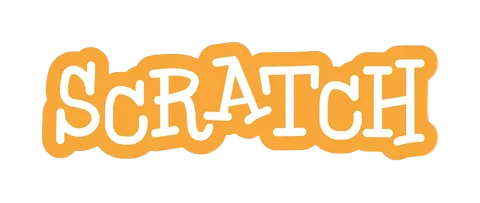

Искатель бомбы
Найди бомбу на поле стрелками, нажимай пробел для подсказок.

Меня зовут Никита, и я увлёкся созданием игр в 10 лет, начав с платформы Scratch. С тех пор я постоянно развиваюсь в этой области, пробуя новые идеи и технологии. Здесь я выложил свои лучшие проекты Scratch — конечно это не все работы, но самые основные. Буду рад вашим отзывам, идеям и предложениям!
Найди бомбу на поле стрелками, нажимай пробел для подсказок.
Набери 50 очков, управляя птицей нажатием на зелёную кнопку.
Лови рыбу пробелом и набери 50 очков до окончания таймера.
Открой меню читов (кнопка HACK) и сыграй с фишками.